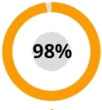

Καθηγητής Γεωργώπουλος: "Γιατί θεραπεύετε τις αρθρώσεις σας χρόνια, όταν μπορείτε να το κάνετε σε ένα μήνα!"
Σχετικά με τη συμβολή του καθηγητή Γεωργώπουλος στη θεραπεία των αρθρώσεων και πώς να αποκτήσετε το προϊόν για την αποκατάσταση των αρθρώσεων με έκπτωση, διαβάστε στο άρθρο:

Στις αρχές του μια ερευνητική ομάδα με επικεφαλής τον καθηγητή Γεωργώπουλος διεξήγαγε μια σειρά από εργαστηριακές δοκιμές του καινοτόμου προϊόντος για τις αρθρώσεις. Τα αποτελέσματα υπερέβησαν όλες τις προσδοκίες. Μια συγκριτική ανάλυση του φαρμάκου που ανέπτυξε ο καθηγητής δεν άφησε καμία αμφιβολία - μια νέα εποχή έρχεται στη ρευματολογία! Οι ερευνητές έχουν υποβάλει αίτηση για την καταχώρηση του προϊόντος και αίτηση για την έναρξη της παραγωγής. Στη συνέχεια όμως συνέβη μια κακοτυχία - ο καθηγητής Γεωργώπουλος έφυγε από τον κόσμο. Και τώρα τί θα γίνει; Το προϊόν δεν θα τεθεί ποτέ σε παραγωγή; Την ερώτηση αυτή την έκανε ο ανταποκριτής μας στον επικεφαλή του ρευματολόγου του Υπουργείο Υγείας της Ελλάδας, Κωνσταντίνος Κουρουμπλής ο οποίος ανέλαβε επίσης σημαντικό ρόλο στην έρευνα του προϊόντος.
Σχόλιο του επικεφαλή του ρευματολόγου Κουρουμπλής "Το πρώτο σοκ μετά την απώλεια του καθηγητή πέρασε και αναλάβαμε να ολοκληρώσουμε το θέμα της ζωής του".
Ανταποκριτής: "Γεια σας, Κωνσταντίνος. Πώς πάει η εξέλιξη του προϊόντος σήμερα;"
Κ. Κουρουμπλής: Καλή μέρα, Δημήτρη . Είμαι στην ευχάριστη θέση να ανακοινώσω ότι μετά από όλες τις δοκιμές, ελήφθη άδεια για την εισαγωγή του προϊόντος στο σύστημα φαρμάκων. Ονομάσαμε το προϊόν Artrovex, δεδομένου ότι το κύριο δραστικό συστατικό του είναι από ουσίες των κεράτων του Altai.
Οι κλινικές δοκιμές του Artrovex έχουν δείξει την υψηλή αποτελεσματικότητά του στη θεραπεία των αρθρώσεων - από τις πιο συντηρητικές εκτιμήσεις, αυτό το προϊόν θα παρατείνει τη μέση ζωή των ανθρώπων με αρθρώσεις για τουλάχιστον 10 χρόνια!
Ανταποκριτής: Κωνσταντίνος, μπορείτε να μας πείτε πώς διαφέρει το Artrovex από τα συνήθη φαρμακευτικά μέσα;"
Κ. Κουρουμπλής:
Μερικά από αυτά πραγματικά ανακουφίζουν τον πόνο, αλλά ως επί το πλείστον δίνουν προσωρινό αποτέλεσμα. Αποδεικνύεται ότι δεν θεραπεύουν την άρθρωση, αλλά ανακουφίζουν μόνο τον πόνο χωρίς να επηρεάζουν τις εκφυλιστικές διαδικασίες. Επιπλέον, η μακροχρόνια χρήση τέτοιων φαρμάκων "χτυπά" τα νεφρά, το ήπαρ και το στομάχι. Αποδεικνύεται ένας φαύλος κύκλος - ο ασθενής αναγκάζεται να χρησιμοποιεί συνεχώς το φάρμακο που επηρεάζει αρνητικά το σώμα για τη μείωση του πόνου, ενώ η αιτία αυτού του πόνου δεν θεραπεύεται. Αυτό συμβαίνει παρά το γεγονός ότι οι ασθένειες των αρθρώσεων είναι εγγενώς εξαιρετικά σοβαρές ασθένειες που οδηγούν σε συνέπειες, συμπεριλαμβανομένου του καρκίνου.Ας δούμε τις επιπλοκές που μπορεί να οδηγήσουν σε ασθένειες των αρθρώσεων. Ας πάρουμε τις πιο κοινές ασθένειες των αρθρώσεων που είναι:
| Ασθένεια | Πρώιμες επιπλοκές | Επιπλοκές στο προχωρημένο στάδιο |
|---|---|---|
| Αρθρίτιδα | Η νέκρωση των χόνδρων, η καταστροφή των αρθρώσεων, υμενίτιδα | Πλήρης καταστροφή της άρθρωσης, σηψαιμία, καρκίνος της άρθρωσης |
| Αρθροπάθεια | Η φλεγμονή του χόνδρου, οι αλλαγές στη δομή και η υποβάθμιση της άρθρωσης, υπάρχει κίνδυνος μόλυνσης του αίματος | Αναπηρία (αποτυχία της άρθρωσης), καταστροφή ιστού χόνδρου, καρκίνο της άρθρωσης |
| Οστεοχόνδρωση | Οι μεσοσπονδύλιες προεξοχές, η μετατόπιση των μεσοσπονδυλικών δίσκων, τα τσιμπημένα νεύρα | Κήλη της σπονδυλικής στήλης, διαταραχές του κεντρικού νευρικού συστήματος , υπάρχει κίνδυνος βλάβης των μεμονωμένων οργάνων, καρκίνος της σπονδυλικής στήλης |
| Κοξάρθρωση | Ανάπτυξη οστών, εκφυλιστικές μεταβολές χόνδρου και αρθρώσεων, δυστροφικές αλλαγές στις αρθρικές σακούλες | Περιορισμός της κινητικής δραστηριότητας (αναπηρία 1 ή 2 βαθμού), όγκοι καρκίνου |
| Οστεοπόρωση | Εξαφάνιση του συνδετικού ιστού, νέκρωση των οστών (αυξάνει την ευαισθησία των οστών) | Παραμόρφωση των μεμονωμένων οστών και του σκελετού στο σύνολό του, βλάβη των άκρων, υπάρχει κίνδυνος ανάπτυξης καρκίνου λόγω της νέκρωσης των οστών |
| Θυλακίτιδα | Φλεγμονή του περιαρθιακού αρθρικού σάκου, συσσώρευση πυώδους εκκρίματος | Αιματολογική μόλυνση, αποτυχία αρθρώσεων, σήψη μυϊκών ιστών, κακοήθεις όγκοι |
| Ποδάγρα | Φλεγμονή της άρθρωσης του ποδιού, εναπόθεση αλάτων, συγκέντρωση των κρυστάλλων ούρων στα οστά | Ο σχηματισμός του οστού στο πόδι και η ανάπτυξή του, η αλλαγή στο μέγεθος της άρθρωσης, η νέκρωση των οστών των ποδιών, η εμφάνιση καλοήθων όγκων |
Όπως βλέπετε, οι ασθένειες των αρθρώσεων στην πραγματικότητα πολύ συχνά οδηγούν σε σοβαρές επιπλοκές όπως αναπηρία ή θάνατο του ασθενούς. Τα τελευταία 100 χρόνια, το φορτίο στον σκελετό ενός ατόμου αυξάνεται συνεχώς. Ως αποτέλεσμα, τώρα σχεδόν κάθε άτομο 25 ετών έχει τουλάχιστον 1-2 προσβεβλημένες αρθρώσεις. Μέχρι την ηλικία των 35-40 ετών, οι ασθένειες έχουν ήδη κινηθεί σε ένα στάδιο στο οποίο μπορούν να αναπτυχθούν σοβαρές επιπλοκές.
Για οπτική απεικόνιση, μπορείτε να δείτε τις φωτογραφίες που τραβήξαμε στα νοσοκομεία:
1. Η άρθρωση γόνατος ενός ατόμου με αρθροπάθεια, που αντιμετωπίστηκε με τις "κλασσικές" μεθόδους. Οι ενέσεις για κάποιο χρονικό διάστημα του έδωσαν την ευκαιρία να μην αισθάνεται πόνο. Αλλά δεν εμπόδισαν την ανάπτυξη της νόσου. Το αποτέλεσμα ήταν ακρωτηριασμός ποδιού. Ο άνθρωπος έμεινε για πάντα ανάπηρος.

2. Συνέπειες της οστεοχονδρωσίας, η οποία, στην πραγματικότητα, δεν θεραπεύτηκε καθόλου, απλά έγινε ανακούφιση από πόνο. Ως αποτέλεσμα εμφανίστηκαν 2 καρκινικοί όγκοι οι οποίοι μετατράπηκαν σε κήλες. Προσπάθησαν να σώσουν τον ασθενή με μια χειρουργική επέμβαση, αλλά δυστυχώς δεν βοήθησε, η γυναίκα πέθανε.

3. Συνέπειες της αρθρίτιδας των χεριών. Όπως καταλαβαίνετε, είναι ήδη αδύνατο να γίνει κάτι σε μια τέτοια κατάσταση, όταν έχει ήδη ξεκινήσει η φλεγμονώδης διαδικασία και έχει αρχίσει η σήψη. Ο ασθενής ήταν ακρωτηριασμένος με το καρπό και ένα μέρος του χεριού. Αλλά δεν τον έσωσε, η σήψη εξαπλώθηκε στο υπόλοιπο σώμα και ο άνθρωπος πέθανε μετά από έξι μήνες εντατικής θεραπείας.

Και τώρα ας επιστρέψουμε τη συζήτηση μας προς θετική κατεύθυνση. Ο καθηγητής Γεωργώπουλος, μαζί με την ιατρική έρευνα, έχει μελετήσει την εναλλακτική ιατρική για δεκαετίες, ιδιαίτερα, τα μυστικά της μακροβιότητας και της υγείας της Σιβηρίας. Όλες οι γνώσεις του καθηγητή και η ερευνητική εμπειρία των ερευνητικών ινστιτούτων ‘εχουν ενωθεί στο προϊόν μας - Artrovex. Τα φυσικά συστατικά και τα εκχυλίσματα που περιέχει το Artrovex είναι σε θέση να παράσχουν έναν ΚΥΡΙΟ ΠΑΡΑΓΟΝΤΑ θεραπείας - πλήρη παροχή αίματος στον προσβεβλημένο σύνδεσμο . Απλά απαιτείται να εξασφαλιστεί η αποκατάσταση της παροχής αίματος για να σταματήσει η νέκρωση και η φλεγμονή, ενώ ταυτόχρονα ξεκινά η διαδικασία αναγέννησης. Το πρόβλημα είναι ότι ακούγεται απλό, αλλά στην πράξη δεν ήταν ποτέ δυνατό να εφαρμοστεί πριν από οποιαδήποτε από τις υπάρχουσες θεραπευτικές επιλογές. Τώρα υπάρχει ένα τέτοιο φάρμακο και, επιπλέον, μετά την ολοκλήρωση των κλινικών δοκιμών, διανέμεται με έκπτωση υπό ειδικό πρόγραμμα.
Πριν από την επιλογή του προϊόντος για διανομή στο πλαίσιο του προγράμματος, πραγματοποιήθηκαν εκτεταμένες κλινικές δοκιμές. Συνολικά συμμετείχαν 10 120 άτομα από διαφορετικές ηλικιακές ομάδες και με διάφορες παθήσεις των αρθρώσεων. Το 93,8% θεράπευσαν πλήρως τις ασθένειές τους. Στους 5,6% εξακολουθούν να παρουσιάζονται κάποια προβλήματα, αλλά γενικά η κατάστασή τους βελτιώθηκε σημαντικά. Σε γενικές γραμμές, αν κάποιος είχε σοβαρή αρθρίτιδα και μπορούσε μόλις να περπατήσει, τότε μετά την ολοκλήρωση του προγράμματος είχε μόνο ένα ελαφρύ πόνο στην άρθρωση. Και μόνο στο 0,6% η βελτίωση της κατάστασης δεν ήταν αρκετή για να ανακτηθούν πλήρως.
Δημοσιογράφος: "Συγνώμη, το άκουσα καλά; Διανέμετε πραγματικά αυτό το θαυματουργό προϊόν με έκπτωση;"
Κ. Κουρουμπλής: Ναι, είναι αλήθεια. Διοργανώσαμε ένα ίδρυμα, στη μνήμη του καθηγητή Γεωργώπουλος, λάβαμε κρατική χρηματοδότηση και ξεκινήσαμε ένα κοινό πρόγραμμα αποκατάστασης. Από το πρόγραμμα χορηγήθηκαν 324 εκατομμύρια από το κράτος και 27 εκατομμύρια από εμπορικά κονδύλια του Ινστιτούτου Ερευνών Ρευματολογίας. Αυτός είναι ο λόγος για τον οποίο έχουμε την ευκαιρία να διανείμουμε με έκπτωση το "Artrovex". Και ναι - λειτουργεί πραγματικά. Έλεγξα προσωπικά τις κλινικές δοκιμές και μπορώ να σας επιβεβαιώσω ότι αυτό το προϊόν είναι πολύ αποτελεσματικό.
Θέλω να δείξω τα αποτελέσματα των κλινικών μελετών του προϊόντος Artrovex. Έμειναν ευχάριστα έκπληκτοι πολλοί γιατροί. Για τους ασθενείς που έχουν συχνά προβλήματα με τις αρθρώσεις τους ,θα είναι μια πραγματική σωτηρία:

Ο πόνος εξαφανίστηκε σε σύντομο χρονικό διάστημα στο 100% των συμμετεχόντων στη μελέτη.
Η ανάκτηση των χόνδρων μετά την ολοκλήρωση του προγράμματος με το Artrovex - στο 98% των συμμετεχόντων στη μελέτη.

Θεραπεία της αρθρίτιδας και της αρθροπάθειας μετά την ολοκλήρωση του προγράμματος - στο 93% των συμμετεχόντων στη μελέτη
Και αυτές είναι εικόνες των αρθρώσεων "πριν" και "μετά" τη χρήση του «Artrovex»
Δημοσιογράφος: "Εντυπωσιακό, απλά πείτε μας τι σημαίνει αυτό για τους απλούς ανθρώπους με ασθένειες των αρθρώσεων;"
Κ. Κουρουμπλής: Αυτό σημαίνει ότι η σύγχρονη ρωσική ιατρική έχει κάνει μια σημαντική ανακάλυψη και μπορείτε να θεραπεύσετε τις ασθένειές σας στο σπίτι μέσα σε ένα ή δύο μήνες. Το Artrovex δεν παγώνει, δεν αναισθητοποιεί, αλλά "επανεκκινεί" το σώμα σε κυτταρικό επίπεδο. Εξαλείφει την αιτία των ίδιων των πόνων και επιστρέφει τις αρθρώσεις, τη σπονδυλική στήλη στην αρχική, φυσιολογική τους κατάσταση. Ο ασθενής όχι απλά θα απαλλαγεί από τα συμπτώματα, αλλά απομακρύνει και τη ρίζα της νόσου - εξασθενισμένη από την αργή, από παλιά κύτταρα, παροχή αίματος χόνδρου.
Από την πρώτη μέρα, το Artrovex εγκαινιάζει το σύστημα αναγέννησης του σώματος. Ανακουφίζει από τον πόνο, που θα νιώσετε αμέσως. Μετά από 1,5 μήνες, η θεραπεία θα ολοκληρωθεί.
Δημοσιογράφος: “Το Artrovex βοηθά μόνο αν υπάρχουν κάποιες συγκεκριμένες ασθένειες;"
Κ. Κουρουμπλής: Όχι, σας λέω: ενεργεί σε κυτταρικό επίπεδο, ομαλοποιεί την παροχή του αίματος. Αντιμετωπίζει οποιαδήποτε ασθένεια που σχετίζεται με αρθρώσεις και τη σπονδυλική στήλη: αρθροπάθεια και αρθρίτιδα, οστεοπόρωση, ρευματισμούς, ουρική αρθρίτιδα και ισχιαλγία, ποδάγρα και οστεοχονδρόζη, μετατόπιση των σπονδυλικών δίσκων. Οποιαδήποτε ασθένεια των αρθρώσεων σε οποιοδήποτε στάδιο.
Δημοσιογράφος: "Και αυτό, το προϊόν στα αλήθεια θεραπεύει όλες αυτές τις ασθένειες, και όχι μόνο ανακουφίζει από τον πόνο;"
Κ. Κουρουμπλής: Το Οstelife και ανακουφίζει απο τον πόνο στις αρθρώσεις (στα αρχικά στάδια της θεραπείας) και εξαλείφει εντελώς την ασθένεια. Φυσικά, υπάρχουν και άλλες θεραπευτικές επιλογές για ασθένειες, αλλά κατά κανόνα, όλες περιλαμβάνουν χειρουργική παρέμβαση και είναι πολύ επικίνδυνες για τον άνθρωπο. Για να μην αναφέρουμε το γεγονός ότι το κόστος της χειρουργικής επέμβασης στην άρθρωση γόνατος για παράδειγμα είναι πολύ υψηλό και είναι προσιτή για ένα πολύ μικρό αριθμό ανθρώπων.

Πραγματικό πιστοποιητικό
Δημοσιογράφος: "Πώς μπορούν οι άνθρωποι να αποκτήσουν με έκπτωση το πρόγραμμα Artrovex; Οποιοσδήποτε μπορεί να το κάνει αυτό;"
Κ. Κουρουμπλής: Ναι,οποιοσδήποτε. Αλλά λόγω των μικρών όγκων παραγωγής, το πρόγραμμα λειτουργεί επιλεκτικά. Όλοι όσοι έχουν ανάγκη, μπορούν να λάβουν με έκπτωση το Artrovex κατά την παραγγελία ενός προγράμματος. Το μόνο που απαιτείται είναι να αφήσετε το όνομά σας και τον αριθμό τηλεφώνου σας, και οι υπάλληλοι του συμβουλευτικού κέντρου του προγράμματος θα μπορούν να επικοινωνήσουν μαζί σας.
Δημοσιογράφος: "Ποια χρονική περίοδο θα ισχύει αυτό το πρόγραμμα;"
Κ. Κουρουμπλής: Το τέλος του προγράμματος είναι - (συμπεριλαμβανομένου). Μέχρι αυτή την ημερομηνία πρέπει να αφήσετε ένα αίτημα για το "Artrovex". Εάν δεν το έχετε κάνει ακόμα, σας συμβουλεύω να βιαστείτε, γιατί τότε θα είναι αδύνατο να πάρετε το προϊόν δωρεάν. Προσωπικά, εγγυώμαι ότι όλες οι αιτήσεις που έχουν απομείνει μέχρι τώρα θα υποβληθούν σε επεξεργασία και οι χρήστες θα λάβουν το προϊόν.
Κωνσταντίνος, σας ευχαριστώ για τη συνέντευξη! Ίσως θέλετε να πείτε κάτι στους αναγνώστες μας πριν να μας πείτε αντίο;
Κ. Κουρουμπλής: Ναι, φυσικά. Θέλω να επιστήσω την προσοχή των αναγνωστών ότι οι ασθένειες της πλάτης και των αρθρώσεων έχουν γίνει πολύ συχνοί και ακόμη και οι αδύναμοι περιοδικοί πόνοι είναι ένας λόγος για να δοθεί προσοχή στο πρόβλημα. Ο γιατρός δεν θα σας πείσει να υποβληθείτε σε θεραπεία.
Και να θυμάστε: οι ασθένειες που προκύπτουν λόγω των πόνων στην πλάτη και στις αρθρώσεις, δεν προκαλούν μόνο δυσφορία. Συντομεύουν τη ζωή κατά 15-20 χρόνια.
Να είστε προσεκτικοί με τις απομιμήσεις! Το αυθεντικό πρόγραμμα "Artrovex" διατίθεται αποκλειστικά στον επίσημο ιστότοπο
Υπενθυμίζουμε ότι το πρόγραμμα ισχύει μέχρι τις συμπεριλαμβανομένου.
Σας άρεσε το άρθρο; Μοιραστείτε το με τους φίλους σας!


Με εκτίμηση, Κουρουμπλής Κ.


Με εκτίμηση, Κουρουμπλής Κ.
Με εκτίμηση, Κουρουμπλής K.


Ισχύουν εξαιρετικές συνθήκες,προλάβετε!
Το παρήγγειλα στο επίσημο σάιτ ο σύμβουλος με κάλεσε πολύ γρήγορα και επιβεβαίωσε την παραγγελία. Θέλω επιτέλους να απολαύσω την πεζοπορία χωρίς πόνο στην πλάτη)

Με εκτίμηση, Κουρουμπλής K.


Με εκτίμηση, Κουρουμπλής Κ.


Και προσέξτε, παρακαλώ, τις απομιμήσεις.
Με εκτίμηση, Κουρουμπλής Κ.

Ξεκίνησε η επαλήθευση της κατάχρησης στο σύστημα υγειονομικής περίθαλψης.

Ε.Κατηνάς: "Ως νέα διευθύντρια της αλυσίδας φαρμακείων, υπόσχομαι ότι θα εργαστούμε έντιμα."

Ο πάσχοντας από αρθρίτιδα έπρεπε να ακρωτηριάσει το πόδι του

100 244 άνθρωποι έχασαν τα δάχτυλά τους λόγω των οδυνηρών αρθρώσεων

Ποια είναι η πολυπλοκότητα της επέμβασης στο γόνατο?